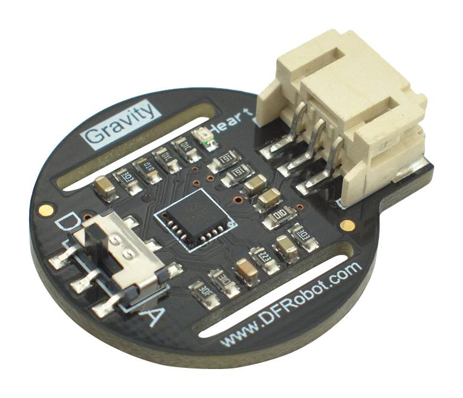
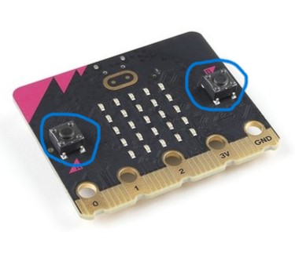
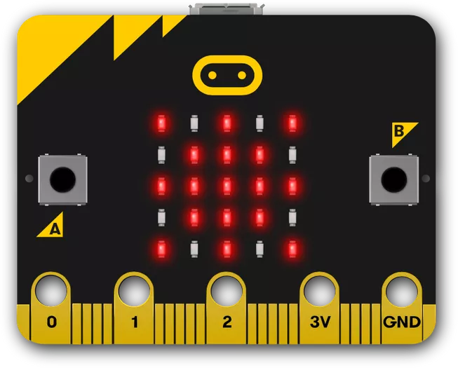
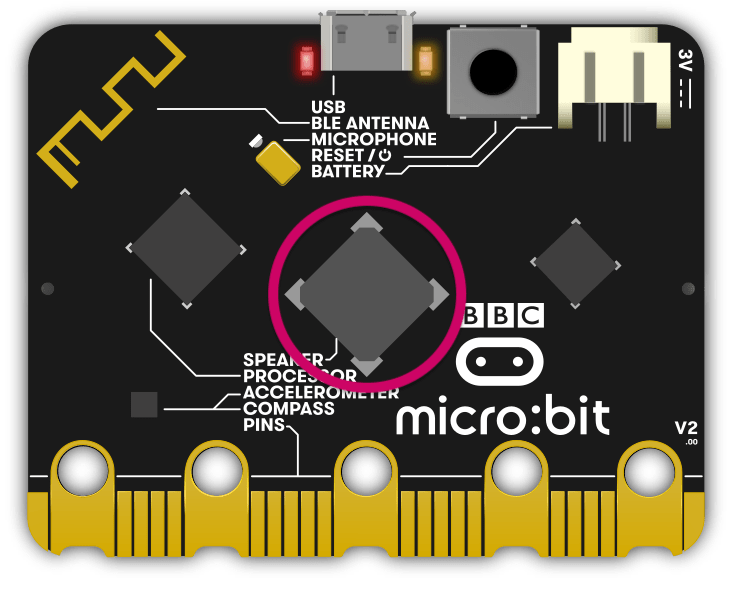
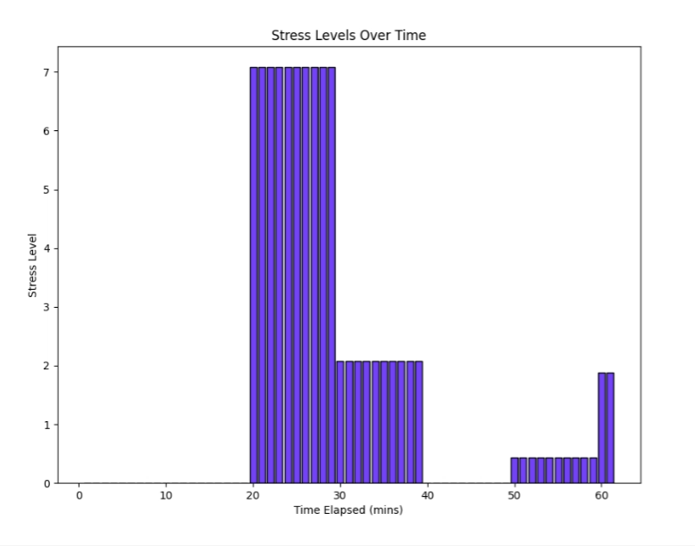
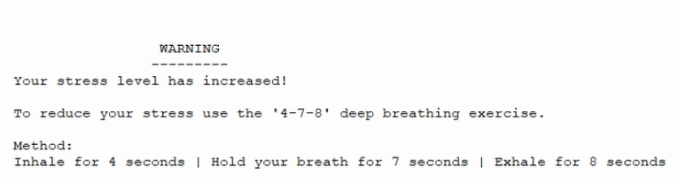

How my artefact meets the requirements set out in the brief:
Overall, my final artefact achieves all project requirements and objectives set out in the brief.
My artefact utilizes a range of digital and analogue inputs and outputs to communicate with the user.
All data received and transmitted by the system is validated before being sent or on arrival.
This data is then stored programmatically in a my own database for later analysis, and works fully
autonomously from the user. The system retains the ability to calculate information based on it's
stored data, and uses this data to inform future decisions related to cardiovascular
health and stress.
Furthermore, the system is capable of using my personally created dataset, which
is generated programmatically and includes multiple descriptive features of wellbeing in the form of
"string" and "integer" data types, to answer two "what if" type questions based on my theme.
Both questions use the parameters of age and gender, which are inputs given to the programme
by the user and are validated through the use of while loops. In addition, each question also
uses the "Heart_Rate" data stored in the CSV file, which had been validated previously in the
"checkBPM()" function, by replacing any unwanted characters and by not accepting NaN values.
Finally, the system is capable of displaying "Heart_Rate" and "Stress_Level" in graphical format,
upon the users request, which allows the user to visualize their progress while using the system.
Inputs
Analogue: Pulse Sensor

Digital: Button Switches

Outputs
Digital: LED Display

Analogue: Speaker

How has the project met the needs of the end users that I have referred to in the investigation:
My project has met most requirements of the end users that I have referred to in the investigation.
First, I was able to create a device which would help the user both monitor and reduce their
stress (shown below) through methods explained by the system. I also managed to ensure it was fully autonomous and
performed all basic requirements without user input. This meant the device continues to function
without the intervention of the user. However, unfortunately the pulse sensor's reliability meant
I could not create a portable device.


Future iterations of the design process:
In future iterations of the design process, I would attempt to
find a way to which the MicroBit could wirelessly transmit data via Bluetooth,
WIFI or even radio signals, instead of using a Serial USB connection. This would
mean that I could more easily create a device vastly more portable than my current
artefact, provided I found a way to overcome the pulse sensor's stationary dependency.